Coordinate System in SpaceHệ trục tọa độ trong không gian
Grade 12 · Topic: Vectors and Coordinates in SpaceLớp 12 · Chủ đề: Vectơ và hệ tọa độ trong không gian
1Lesson IntroductionGiới thiệu bài học
Learning goalsMục tiêu bài học
By the end of this lesson you can:
Sau bài học này, em có thể:
describe a point and a vector in \(Oxyz\) by coordinates;
mô tả điểm và vectơ trong hệ trục tọa độ Oxyz bằng tọa độ của điểm, tọa độ của vectơ;
find projections and symmetric points;
tìm hình chiếu vuông góc và điểm đối xứng;
compute \(AB\), the midpoint and the centroid;
tính độ dài \(AB\), trung điểm và trọng tâm;
use coordinates to describe real objects such as a room or a drone.
dùng tọa độ để mô tả đối tượng thực tế như căn phòng hay máy bay không người lái.
2Mathematical VocabularyTừ vựng Toán học
coordinate system Oxyz – three number lines \(Ox,Oy,Oz\) that are perpendicular and meet at the origin \(O\).
hệ trục tọa độ Oxyz – ba trục \(Ox,Oy,Oz\) đôi một vuông góc và cắt nhau tại gốc tọa độ \(O\).
coordinates of a point – the ordered triple \((x;y;z)\) that fixes a point in space.
tọa độ của điểm – bộ ba số có thứ tự \((x;y;z)\) xác định vị trí của điểm trong không gian.
coordinates of a vector – the triple \((x;y;z)\) with \(\vec a=x\vec i+y\vec j+z\vec k\).
tọa độ của vectơ – bộ ba số \((x;y;z)\) sao cho \(\vec a=x\vec i+y\vec j+z\vec k\).
origin – the point \(O(0;0;0)\) where the three axes meet.
gốc tọa độ – điểm \(O(0;0;0)\) nơi ba trục cắt nhau.
projection – the foot of the perpendicular from a point to a plane or a line.
hình chiếu vuông góc – chân đường vuông góc hạ từ một điểm xuống mặt phẳng hoặc đường thẳng.
symmetric point – the mirror image of a point about a point, a line or a plane.
điểm đối xứng – ảnh của một điểm qua phép đối xứng tâm, trục hoặc mặt phẳng.
midpoint – the point in the middle of a segment.
trung điểm – điểm nằm chính giữa đoạn thẳng.
centroid – the point where the three medians of a triangle meet.
trọng tâm – giao điểm ba đường trung tuyến của tam giác.
3Useful English PhrasesCụm từ tiếng Anh thường gặp
Find the coordinates of the point.
Tìm tọa độ của điểm.
Find the distance between \(A\) and \(B\).
Tìm khoảng cách giữa \(A\) và \(B\).
Find the projection of \(M\) onto the plane.
Tìm hình chiếu của \(M\) lên mặt phẳng.
\(G\) is the centroid of the triangle.
\(G\) là trọng tâm của tam giác.
The point is symmetric to \(M\).
Điểm đó đối xứng với \(M\).
4Prerequisite ReviewÔn tập kiến thức nền
In the plane \(Oxy\) a point has two coordinates. In space we add a third axis \(Oz\) perpendicular to the plane \(Oxy\), so every point has three coordinates.
Trong mặt phẳng \(Oxy\), điểm có hai tọa độ. Trong không gian, ta thêm trục \(Oz\) vuông góc với mặt phẳng \(Oxy\) nên mỗi điểm có ba tọa độ.
5TheoryLý thuyết
5.1 Coordinates of a pointTọa độ của điểm
DefinitionĐịnh nghĩa
The system \(Oxyz\) has three perpendicular axes meeting at \(O\). A point \(M(x;y;z)\) has \(x\) on \(Ox\), \(y\) on \(Oy\), \(z\) on \(Oz\). The unit vectors on the axes are \(\vec i,\vec j,\vec k\), and \(\overrightarrow{OM}=x\vec i+y\vec j+z\vec k\).
Hệ trục tọa độ Oxyz có ba trục đôi một vuông góc cắt nhau tại gốc tọa độ \(O\). Điểm \(M(x;y;z)\) có hoành độ \(x\), tung độ \(y\), cao độ \(z\). Các vectơ đơn vị trên ba trục là \(\vec i,\vec j,\vec k\) và \(\overrightarrow{OM}=x\vec i+y\vec j+z\vec k\).
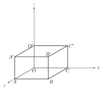
5.2 Projections and symmetric pointsHình chiếu và điểm đối xứng
Projections of \(M(a;b;c)\)Hình chiếu của \(M(a;b;c)\)
onto \((Oxy)\): \((a;b;0)\); onto \((Oyz)\): \((0;b;c)\); onto \((Oxz)\): \((a;0;c)\);
lên \((Oxy)\): \((a;b;0)\); lên \((Oyz)\): \((0;b;c)\); lên \((Oxz)\): \((a;0;c)\);
onto \(Ox\): \((a;0;0)\); onto \(Oy\): \((0;b;0)\); onto \(Oz\): \((0;0;c)\).
lên \(Ox\): \((a;0;0)\); lên \(Oy\): \((0;b;0)\); lên \(Oz\): \((0;0;c)\).
Symmetric points of \(M(a;b;c)\)Điểm đối xứng của \(M(a;b;c)\)
about \(O\): \((-a;-b;-c)\); about \((Oxy)\): \((a;b;-c)\); about \((Oyz)\): \((-a;b;c)\); about \((Oxz)\): \((a;-b;c)\);
qua \(O\): \((-a;-b;-c)\); qua \((Oxy)\): \((a;b;-c)\); qua \((Oyz)\): \((-a;b;c)\); qua \((Oxz)\): \((a;-b;c)\);
about \(Ox\): \((a;-b;-c)\); about \(Oy\): \((-a;b;-c)\); about \(Oz\): \((-a;-b;c)\).
qua \(Ox\): \((a;-b;-c)\); qua \(Oy\): \((-a;b;-c)\); qua \(Oz\): \((-a;-b;c)\).
5.3 Distance, midpoint, centroidKhoảng cách, trung điểm, trọng tâm
FormulasCông thức
\(\overrightarrow{AB}=(x_B-x_A;\,y_B-y_A;\,z_B-z_A)\).
\(\overrightarrow{AB}=(x_B-x_A;\,y_B-y_A;\,z_B-z_A)\).
\(AB=\sqrt{(x_B-x_A)^2+(y_B-y_A)^2+(z_B-z_A)^2}\).
\(AB=\sqrt{(x_B-x_A)^2+(y_B-y_A)^2+(z_B-z_A)^2}\).
Midpoint of \(AB\): \(\left(\dfrac{x_A+x_B}2;\dfrac{y_A+y_B}2;\dfrac{z_A+z_B}2\right)\).
Trung điểm của \(AB\): \(\left(\dfrac{x_A+x_B}2;\dfrac{y_A+y_B}2;\dfrac{z_A+z_B}2\right)\).
Centroid of \(ABC\): \(\left(\dfrac{x_A+x_B+x_C}3;\dfrac{y_A+y_B+y_C}3;\dfrac{z_A+z_B+z_C}3\right)\).
Trọng tâm của tam giác \(ABC\): \(\left(\dfrac{x_A+x_B+x_C}3;\dfrac{y_A+y_B+y_C}3;\dfrac{z_A+z_B+z_C}3\right)\).
Watch out!Lưu ý
Order matters: \(\overrightarrow{AB}\) is “end minus start”. Do not swap the signs of the squares: inside the root every term is positive.
Thứ tự quan trọng: \(\overrightarrow{AB}\) là “điểm cuối trừ điểm đầu”. Dưới dấu căn mọi số hạng đều không âm.
6Worked ExamplesVí dụ có lời giải
ExampleVí dụ 1BasicCơ bản – Read coordinatesĐọc tọa độ
In the box of the figure, give the coordinates of \(B'\) and of the midpoint of \(OB'\).
Trong hình hộp ở trên, cho tọa độ \(B'\) và trung điểm \(OB'\).
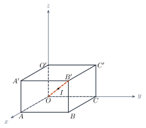
Analysis: \(B'\) has the \(x\) of \(A\), the \(y\) of \(C\), the \(z\) of \(O'\).
Phân tích: \(B'\) có hoành độ của \(A\), tung độ của \(C\), cao độ của \(O'\).
\(B'(4;3;2)\).
\(B'(4;3;2)\).
Midpoint: \(\left(\dfrac{0+4}2;\dfrac{0+3}2;\dfrac{0+2}2\right)\).
Trung điểm: \(\left(\dfrac{0+4}2;\dfrac{0+3}2;\dfrac{0+2}2\right)\).
\(B'(4;3;2)\); midpoint \(\left(2;\dfrac32;1\right)\).
\(B'(4;3;2)\); trung điểm \(\left(2;\dfrac32;1\right)\).
ExampleVí dụ 2BasicCơ bản – ProjectionHình chiếu
Find the projections of \(M(3;-2;5)\) onto \((Oxz)\) and onto \(Oy\).
Tìm hình chiếu của \(M(3;-2;5)\) lên \((Oxz)\) và lên \(Oy\).
Analysis: Keep the coordinates that stay, set the others to 0.
Phân tích: Giữ các tọa độ ở lại, các tọa độ còn lại bằng 0.
Onto \((Oxz)\): \(y=0\).
Lên \((Oxz)\): cho \(y=0\).
Onto \(Oy\): keep only \(y\).
Lên \(Oy\): chỉ giữ \(y\).
\((3;0;5)\) and \((0;-2;0)\).
\((3;0;5)\) và \((0;-2;0)\).
ExampleVí dụ 3IntermediateTrung bình – DistanceKhoảng cách
Find \(AB\) for \(A(1;2;-1)\), \(B(3;6;3)\).
Tính \(AB\) với \(A(1;2;-1)\), \(B(3;6;3)\).
Analysis: First \(\overrightarrow{AB}\), then its length.
Phân tích: Tìm \(\overrightarrow{AB}\) trước, rồi tính độ dài.
\(\overrightarrow{AB}=(2;4;4)\).
\(\overrightarrow{AB}=(2;4;4)\).
\(AB=\sqrt{4+16+16}=\sqrt{36}\).
\(AB=\sqrt{4+16+16}=\sqrt{36}\).
\(AB=6\).
\(AB=6\).
ExampleVí dụ 4IntermediateTrung bình – CentroidTrọng tâm
\(A(1;0;2)\), \(B(3;4;-1)\), \(C(2;2;5)\). Find the centroid \(G\) of \(ABC\).
Cho \(A(1;0;2)\), \(B(3;4;-1)\), \(C(2;2;5)\). Tìm trọng tâm \(G\) của tam giác \(ABC\).
Analysis: Average each coordinate.
Phân tích: Lấy trung bình cộng từng tọa độ.
\(x_G=\dfrac{1+3+2}3=2\), \(y_G=\dfrac{0+4+2}3=2\), \(z_G=\dfrac{2-1+5}3=2\).
\(x_G=\dfrac{1+3+2}3=2\), \(y_G=\dfrac{0+4+2}3=2\), \(z_G=\dfrac{2-1+5}3=2\).
\(G(2;2;2)\).
\(G(2;2;2)\).
ExampleVí dụ 5AdvancedNâng cao – A drone in a roomMáy bay không người lái trong phòng
A room is \(6\ \text{m}\times4\ \text{m}\times3\ \text{m}\) with one corner at \(O\). A drone is at \(P(2;1;2)\) and a lamp is at the opposite top corner \(L(6;4;3)\). Find the distance \(PL\).
Căn phòng \(6\ \text{m}\times4\ \text{m}\times3\ \text{m}\) có một góc tại \(O\). Máy bay ở \(P(2;1;2)\), đèn ở góc trần đối diện \(L(6;4;3)\). Tính khoảng cách \(PL\).
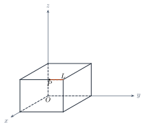
Analysis: Treat the room as a box in \(Oxyz\) and use the distance formula.
Phân tích: Coi căn phòng là hình hộp trong \(Oxyz\) rồi dùng công thức khoảng cách.
\(\overrightarrow{PL}=(4;3;1)\).
\(\overrightarrow{PL}=(4;3;1)\).
\(PL=\sqrt{16+9+1}=\sqrt{26}\approx5.1\).
\(PL=\sqrt{16+9+1}=\sqrt{26}\approx5{,}1\).
\(PL=\sqrt{26}\approx5.1\ \text{m}\).
\(PL=\sqrt{26}\approx5{,}1\ \text{m}\).
7PracticeBài tập luyện tập
A. Multiple ChoiceA. Trắc nghiệm nhiều lựa chọn
The projection of \(M(3;-2;5)\) onto the plane \((Oxz)\) is…
Hình chiếu vuông góc của \(M(3;-2;5)\) lên mặt phẳng \((Oxz)\) là…
Answer: c. Set the missing coordinate to 0.
Đáp án c. Cho tọa độ còn thiếu bằng 0.
\(A(1;2;-1)\), \(B(3;6;3)\). Then \(AB=\)…
Cho \(A(1;2;-1)\), \(B(3;6;3)\). Khi đó \(AB=\)…
Answer: d. \(AB=\sqrt{36}=6\).
Đáp án d. \(AB=\sqrt{36}=6\).
\(A(1;2;-1)\), \(B(3;6;3)\), \(C(2;-2;4)\). The centroid of \(ABC\) is…
Cho \(A(1;2;-1)\), \(B(3;6;3)\), \(C(2;-2;4)\). Trọng tâm tam giác \(ABC\) là…
Answer: a. Average the coordinates.
Đáp án a. Lấy trung bình cộng từng tọa độ.
In \(Oxyz\), \(A(4;\,3;\,3)\) and \(B(1;\,1;\,4)\) (see the figure). The coordinates of \(\overrightarrow{AB}\) are…
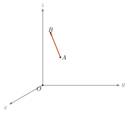
Trong không gian \(Oxyz\), cho \(A(4;\,3;\,3)\) và \(B(1;\,1;\,4)\) (xem hình). Tọa độ của \(\overrightarrow{AB}\) là…
Answer: b. \(\overrightarrow{AB}=(x_B-x_A;\,y_B-y_A;\,z_B-z_A)=(-3;\,-2;\,1)\).
Đáp án b. \(\overrightarrow{AB}=(x_B-x_A;\,y_B-y_A;\,z_B-z_A)=(-3;\,-2;\,1)\).
A room has a floor corner at \(O\); the floor is the plane \((Oxy)\), the two walls are \((Oxz)\) and \((Oyz)\). A flycam \(M\) hovers \(5\) m from the wall \((Oyz)\), \(6\) m from the wall \((Oxz)\) and \(4\) m above the floor (see the figure). The coordinates of \(M\) are…
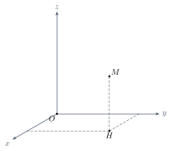
Một căn phòng có góc sàn tại \(O\); sàn là mặt phẳng \((Oxy)\), hai bức tường là \((Oxz)\) và \((Oyz)\). Một flycam \(M\) bay cách tường \((Oyz)\) \(5\) m, cách tường \((Oxz)\) \(6\) m và cách sàn \(4\) m (xem hình). Tọa độ của \(M\) là…
Answer: b. The distance to \((Oyz)\) is \(|x|\), to \((Oxz)\) is \(|y|\), to \((Oxy)\) is \(|z|\); \(M\) is inside the room, so all coordinates are positive: \(M(5;\,6;\,4)\).
Đáp án b. Khoảng cách tới \((Oyz)\) là \(|x|\), tới \((Oxz)\) là \(|y|\), tới \((Oxy)\) là \(|z|\); \(M\) ở trong phòng nên các tọa độ đều dương: \(M(5;\,6;\,4)\).
The cube \(ABCD.A'B'C'D'\) has edge \(8\), \(A\equiv O\), \(B\in Ox\), \(D\in Oy\), \(A'\in Oz\) (all with positive coordinates; see the figure). The coordinates of the center \(I\) of the face \(A'B'C'D'\) are…
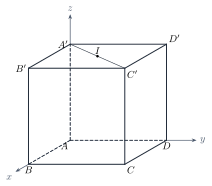
Hình lập phương \(ABCD.A'B'C'D'\) có cạnh \(8\), \(A\equiv O\), \(B\in Ox\), \(D\in Oy\), \(A'\in Oz\) (các tọa độ đều không âm; xem hình). Tọa độ của tâm \(I\) của mặt \(A'B'C'D'\) là…
Answer: c. \(B(8;0;0)\), \(D(0;8;0)\), \(A'(0;0;8)\); \(I\) is the midpoint of \(A'C'\) with \(A'(0;\,0;\,8)\), \(C'(8;\,8;\,8)\), so \(I(4;\,4;\,8)\).
Đáp án c. \(B(8;0;0)\), \(D(0;8;0)\), \(A'(0;0;8)\); \(I\) là trung điểm của \(A'C'\) với \(A'(0;\,0;\,8)\), \(C'(8;\,8;\,8)\), nên \(I(4;\,4;\,8)\).
B. True or FalseB. Đúng hoặc sai
The point symmetric to \(M(3;-2;5)\) about the origin \(O\) is \((-3;2;-5)\).
Điểm đối xứng với \(M(3;-2;5)\) qua gốc \(O\) là \((-3;2;-5)\).
The correct point is \((-3;2;-5)\).
Điểm đúng là \((-3;2;-5)\).
The point \(N(3;-2;0)\) lies in the plane \((Oxy)\).
Điểm \(N(3;-2;0)\) thuộc mặt phẳng \((Oxy)\).
A point of \((Oxy)\) has the third coordinate 0.
Điểm thuộc \((Oxy)\) có tọa độ thứ ba bằng 0.
The distance from \(M(3;\,2;\,4)\) to the plane \((Oxy)\) equals \(4\).
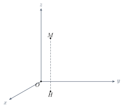
Khoảng cách từ \(M(3;\,2;\,4)\) đến mặt phẳng \((Oxy)\) bằng \(4\).
The plane \((Oxy)\) is \(z=0\), so \(d=|z_M|=4\). The statement is true.
Mặt phẳng \((Oxy)\) có phương trình \(z=0\), nên \(d=|z_M|=4\). Mệnh đề đúng.
C. Short AnswerC. Trả lời ngắn
\(A(0;1;2)\), \(B(2;4;8)\). Find \(AB\).
Cho \(A(0;1;2)\), \(B(2;4;8)\). Tính \(AB\).
Enter a number.
Nhập một số.
\(AB=\sqrt{(x_B-x_A)^2+\dots}=7\).
\(AB=\sqrt{(x_B-x_A)^2+\dots}=7\).
\(ABCD\) is a parallelogram, \(A(1;2;3)\), \(B(2;0;1)\), \(C(4;1;2)\). Find the \(z\)-coordinate of \(D\).
Cho hình bình hành \(ABCD\) có \(A(1;2;3)\), \(B(2;0;1)\), \(C(4;1;2)\). Tìm cao độ của \(D\).
Enter a number.
Nhập một số.
\(z_D=z_A+z_C-z_B=4\).
\(z_D=z_A+z_C-z_B=4\).
A crane moves a crate from \(A(2;\,5;\,3)\) by the displacement vector \(\overrightarrow{AB}=(5;\,1;\,3)\) (meters, see the figure). Find the \(y\)-coordinate of the new position \(B\).
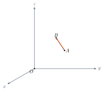
Một cần cẩu di chuyển kiện hàng từ vị trí \(A(2;\,5;\,3)\) theo vectơ dịch chuyển \(\overrightarrow{AB}=(5;\,1;\,3)\) (đơn vị mét, xem hình). Tìm tung độ của vị trí mới \(B\).
Enter a number.
Nhập một số.
\(\overrightarrow{AB}=(x_B-x_A;\,y_B-y_A;\,z_B-z_A)\Rightarrow B=A+\overrightarrow{AB}=(7;\,6;\,6)\).
\(\overrightarrow{AB}=(x_B-x_A;\,y_B-y_A;\,z_B-z_A)\Rightarrow B=A+\overrightarrow{AB}=(7;\,6;\,6)\).
D. Self-practice: Multiple ChoiceD. Tự luyện: trắc nghiệm
The rectangular box \(OABC.O'A'B'C'\) has \(O\) at the origin, \(A\) on \(Ox\), \(C\) on \(Oy\), \(O'\) on \(Oz\), with \(OA=2\), \(OC=4\), \(OO'=5\) (see the figure). The coordinates of \(B'\) are…
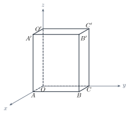
Hình hộp chữ nhật \(OABC.O'A'B'C'\) có \(O\) là gốc tọa độ, \(A\) thuộc \(Ox\), \(C\) thuộc \(Oy\), \(O'\) thuộc \(Oz\), với \(OA=2\), \(OC=4\), \(OO'=5\) (xem hình). Tọa độ của \(B'\) là…
Answer: b. \(B'\) is reached by going \(2\) along \(Ox\), \(4\) along \(Oy\), \(5\) along \(Oz\): \(B'(2;\,4;\,5)\).
Đáp án b. Từ \(O\) tới \(B'\): đi \(2\) theo \(Ox\), \(4\) theo \(Oy\), \(5\) theo \(Oz\): \(B'(2;\,4;\,5)\).
The point symmetric to \(M(-1;\,-2;\,-4)\) with respect to the plane \((Oxz)\) is…
Điểm đối xứng với \(M(-1;\,-2;\,-4)\) qua mặt phẳng \((Oxz)\) là…
Answer: a. Reflecting in \((Oxz)\) changes only the sign of the coordinate along the axis perpendicular to it.
Đáp án a. Đối xứng qua \((Oxz)\) chỉ đổi dấu tọa độ ứng với trục vuông góc với mặt phẳng đó.
The distance from \(M(-6;\,9;\,-8)\) to the axis \(Oy\) is…
Khoảng cách từ \(M(-6;\,9;\,-8)\) đến trục \(Oy\) bằng…
Answer: d. The foot of the perpendicular on \(Oy\) keeps only the \(y\)-coordinate, so the distance is \(\sqrt{6^2+8^2}=10\).
Đáp án d. Hình chiếu của \(M\) trên \(Oy\) chỉ giữ tọa độ \(y\), nên khoảng cách là \(\sqrt{6^2+8^2}=10\).
In \(Oxyz\), \(\overrightarrow{OM}=-6\vec i+5\vec j\). The coordinates of \(M\) are…
Trong không gian \(Oxyz\), \(\overrightarrow{OM}=-6\vec i+5\vec j\). Tọa độ điểm \(M\) là…
Answer: c. \(\overrightarrow{OM}=x\vec i+y\vec j+z\vec k\Leftrightarrow M(x;y;z)\); a missing vector means coordinate 0: \(M(-6;\,5;\,0)\).
Đáp án c. \(\overrightarrow{OM}=x\vec i+y\vec j+z\vec k\Leftrightarrow M(x;y;z)\); vectơ đơn vị không có mặt ứng với tọa độ 0: \(M(-6;\,5;\,0)\).
Find the point \(M\) on the axis \(Oy\) that is equidistant from \(A(5;\,-1;\,1)\) and \(B(5;\,1;\,3)\).
Tìm điểm \(M\) thuộc trục \(Oy\) cách đều hai điểm \(A(5;\,-1;\,1)\) và \(B(5;\,1;\,3)\).
Answer: d. \(M\) has only the \(y\)-coordinate \(t\). \(MA^2=MB^2\) gives a linear equation in \(t\): \(t=2\).
Đáp án d. \(M\) chỉ có tọa độ \(y=t\). Từ \(MA^2=MB^2\) được phương trình bậc nhất ẩn \(t\): \(t=2\).
A room is a rectangular box \(8\) m long (along \(Ox\)), \(4\) m wide (along \(Oy\)) and \(1\) m high (along \(Oz\)), with a floor corner at \(O\). A cable is stretched from \(O\) to the opposite corner of the ceiling. How long is the cable (m)?
Một căn phòng dạng hình hộp chữ nhật dài \(8\) m (theo \(Ox\)), rộng \(4\) m (theo \(Oy\)), cao \(1\) m (theo \(Oz\)), một góc sàn ở \(O\). Người ta căng một sợi dây từ \(O\) đến góc đối diện trên trần. Sợi dây dài bao nhiêu mét?
Answer: d. The opposite ceiling corner is \((8;\,4;\,1)\), so the length is \(\sqrt{8^2+4^2+1^2}=9\).
Đáp án d. Góc trần đối diện là \((8;\,4;\,1)\), nên độ dài là \(\sqrt{8^2+4^2+1^2}=9\).
\(A(2;\,-2;\,-2)\), \(B(-1;\,-3;\,-1)\), \(C(1;\,-2;\,-5)\). Triangle \(ABC\)…
Cho \(A(2;\,-2;\,-2)\), \(B(-1;\,-3;\,-1)\), \(C(1;\,-2;\,-5)\). Tam giác \(ABC\)…
Answer: d. \(\overrightarrow{AB}\cdot\overrightarrow{AC}=0\), so the right angle is at \(A\).
Đáp án d. \(\overrightarrow{AB}\cdot\overrightarrow{AC}=0\), nên tam giác vuông tại \(A\).
\(A(-5;\,-3;\,5)\), \(B(4;\,-6;\,2)\). \(M\) lies on segment \(AB\) with \(MA=\dfrac{1}{2}\,MB\). The coordinates of \(M\) are…
Cho \(A(-5;\,-3;\,5)\), \(B(4;\,-6;\,2)\). Điểm \(M\) thuộc đoạn \(AB\) sao cho \(MA=\dfrac{1}{2}\,MB\). Tọa độ của \(M\) là…
Answer: a. \(\overrightarrow{AM}=\dfrac{1}{2}\overrightarrow{MB}\Rightarrow M=\dfrac{A+\dfrac{1}{2} B}{1+\dfrac{1}{2}}=(-2;\,-4;\,4)\).
Đáp án a. \(\overrightarrow{AM}=\dfrac{1}{2}\overrightarrow{MB}\Rightarrow M=\dfrac{A+\dfrac{1}{2} B}{1+\dfrac{1}{2}}=(-2;\,-4;\,4)\).
A. Multiple ChoiceA. Trắc nghiệm nhiều lựa chọn
The projection of \(M(-4;1;2)\) onto the plane \((Oxy)\) is…
Hình chiếu vuông góc của \(M(-4;1;2)\) lên mặt phẳng \((Oxy)\) là…
Answer: d. Set the missing coordinate to 0.
Đáp án d. Cho tọa độ còn thiếu bằng 0.
\(A(0;-1;3)\), \(B(6;5;10)\). Then \(AB=\)…
Cho \(A(0;-1;3)\), \(B(6;5;10)\). Khi đó \(AB=\)…
Answer: a. \(AB=\sqrt{121}=11\).
Đáp án a. \(AB=\sqrt{121}=11\).
\(A(0;-1;3)\), \(B(6;5;10)\), \(C(-3;-4;-4)\). The centroid of \(ABC\) is…
Cho \(A(0;-1;3)\), \(B(6;5;10)\), \(C(-3;-4;-4)\). Trọng tâm tam giác \(ABC\) là…
Answer: a. Average the coordinates.
Đáp án a. Lấy trung bình cộng từng tọa độ.
Given \(A(4;\,0;\,2)\), \(B(2;\,1;\,5)\) in \(Oxyz\) (figure), find the coordinates of the vector \(\overrightarrow{AB}\).
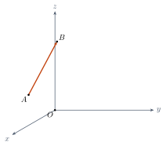
Cho \(A(4;\,0;\,2)\), \(B(2;\,1;\,5)\) trong không gian \(Oxyz\) (hình vẽ). Tìm tọa độ của vectơ \(\overrightarrow{AB}\).
Answer: b. \(\overrightarrow{AB}=(x_B-x_A;\,y_B-y_A;\,z_B-z_A)=(-2;\,1;\,3)\).
Đáp án b. \(\overrightarrow{AB}=(x_B-x_A;\,y_B-y_A;\,z_B-z_A)=(-2;\,1;\,3)\).
In a warehouse, \(O\) is a floor corner, the floor is \((Oxy)\) and the walls are \((Oxz)\), \((Oyz)\). A lamp \(M\) is \(6\) m from \((Oyz)\), \(4\) m from \((Oxz)\) and \(5\) m above the floor (figure). Find the coordinates of \(M\).
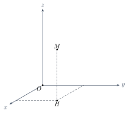
Trong một nhà kho, \(O\) là một góc sàn, sàn là \((Oxy)\), các bức tường là \((Oxz)\), \((Oyz)\). Một bóng đèn \(M\) cách \((Oyz)\) \(6\) m, cách \((Oxz)\) \(4\) m và cách sàn \(5\) m (hình vẽ). Tìm tọa độ của \(M\).
Answer: a. The distance to \((Oyz)\) is \(|x|\), to \((Oxz)\) is \(|y|\), to \((Oxy)\) is \(|z|\); \(M\) is inside the room, so all coordinates are positive: \(M(6;\,4;\,5)\).
Đáp án a. Khoảng cách tới \((Oyz)\) là \(|x|\), tới \((Oxz)\) là \(|y|\), tới \((Oxy)\) là \(|z|\); \(M\) ở trong phòng nên các tọa độ đều dương: \(M(6;\,4;\,5)\).
Place the cube \(ABCD.A'B'C'D'\) with edge \(6\) in \(Oxyz\) so that \(A\) is the origin and \(B\), \(D\), \(A'\) lie on the positive parts of \(Ox\), \(Oy\), \(Oz\) (figure). Find the coordinates of the center \(I\) of the face \(CDD'C'\).
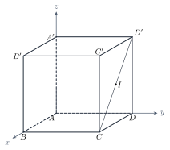
Đặt hình lập phương \(ABCD.A'B'C'D'\) cạnh \(6\) vào hệ \(Oxyz\) sao cho \(A\) là gốc tọa độ và \(B\), \(D\), \(A'\) nằm trên các tia \(Ox\), \(Oy\), \(Oz\) (hình vẽ). Tìm tọa độ của tâm \(I\) của mặt \(CDD'C'\).
Answer: b. \(B(6;0;0)\), \(D(0;6;0)\), \(A'(0;0;6)\); \(I\) is the midpoint of \(CD'\) with \(C(6;\,6;\,0)\), \(D'(0;\,6;\,6)\), so \(I(3;\,6;\,3)\).
Đáp án b. \(B(6;0;0)\), \(D(0;6;0)\), \(A'(0;0;6)\); \(I\) là trung điểm của \(CD'\) với \(C(6;\,6;\,0)\), \(D'(0;\,6;\,6)\), nên \(I(3;\,6;\,3)\).
B. True or FalseB. Đúng hoặc sai
The point symmetric to \(M(-4;1;2)\) about the plane \((Oxy)\) is \((-4;1;-1)\).
Điểm đối xứng với \(M(-4;1;2)\) qua mặt phẳng \((Oxy)\) là \((-4;1;-1)\).
The correct point is \((-4;1;-2)\).
Điểm đúng là \((-4;1;-2)\).
The point \(N(1;3;-2)\) lies in the plane \((Oyz)\).
Điểm \(N(1;3;-2)\) thuộc mặt phẳng \((Oyz)\).
A point of \((Oyz)\) has the third coordinate 0.
Điểm thuộc \((Oyz)\) có tọa độ thứ ba bằng 0.
In \(Oxyz\), the point \(M(6;\,4;\,1)\) is at distance \(1\) from the plane \((Oxy)\) (\(H\) is the foot of the perpendicular, see the figure).
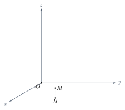
Trong không gian \(Oxyz\), điểm \(M(6;\,4;\,1)\) cách mặt phẳng \((Oxy)\) một khoảng bằng \(1\) (\(H\) là hình chiếu vuông góc, xem hình).
The plane \((Oxy)\) is \(z=0\), so \(d=|z_M|=1\). The statement is true.
Mặt phẳng \((Oxy)\) có phương trình \(z=0\), nên \(d=|z_M|=1\). Mệnh đề đúng.
C. Short AnswerC. Trả lời ngắn
\(A(1;2;3)\), \(B(3;8;12)\). Find \(AB\).
Cho \(A(1;2;3)\), \(B(3;8;12)\). Tính \(AB\).
Enter a number.
Nhập một số.
\(AB=\sqrt{(x_B-x_A)^2+\dots}=11\).
\(AB=\sqrt{(x_B-x_A)^2+\dots}=11\).
\(ABCD\) is a parallelogram, \(A(0;0;1)\), \(B(3;1;0)\), \(C(5;2;4)\). Find the \(z\)-coordinate of \(D\).
Cho hình bình hành \(ABCD\) có \(A(0;0;1)\), \(B(3;1;0)\), \(C(5;2;4)\). Tìm cao độ của \(D\).
Enter a number.
Nhập một số.
\(z_D=z_A+z_C-z_B=5\).
\(z_D=z_A+z_C-z_B=5\).
A delivery drone starts at \(A(1;\,5;\,4)\) and flies along \(\overrightarrow{AB}=(5;\,-2;\,3)\) (figure). What is the \(y\)-coordinate of the point \(B\) it reaches?
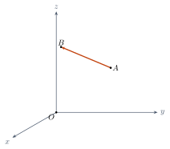
Một drone giao hàng xuất phát từ \(A(1;\,5;\,4)\) và bay theo vectơ \(\overrightarrow{AB}=(5;\,-2;\,3)\) (hình vẽ). Tìm tung độ của điểm \(B\) mà drone tới được.
Enter a number.
Nhập một số.
\(\overrightarrow{AB}=(x_B-x_A;\,y_B-y_A;\,z_B-z_A)\Rightarrow B=A+\overrightarrow{AB}=(6;\,3;\,7)\).
\(\overrightarrow{AB}=(x_B-x_A;\,y_B-y_A;\,z_B-z_A)\Rightarrow B=A+\overrightarrow{AB}=(6;\,3;\,7)\).
D. Self-practice: Multiple ChoiceD. Tự luyện: trắc nghiệm
The rectangular box \(OABC.O'A'B'C'\) has \(O\) at the origin, \(A\) on \(Ox\), \(C\) on \(Oy\), \(O'\) on \(Oz\), with \(OA=2\), \(OC=5\), \(OO'=4\) (see the figure). The coordinates of \(A'\) are…
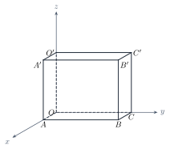
Hình hộp chữ nhật \(OABC.O'A'B'C'\) có \(O\) là gốc tọa độ, \(A\) thuộc \(Ox\), \(C\) thuộc \(Oy\), \(O'\) thuộc \(Oz\), với \(OA=2\), \(OC=5\), \(OO'=4\) (xem hình). Tọa độ của \(A'\) là…
Answer: d. \(A'\) is reached by going \(2\) along \(Ox\), \(0\) along \(Oy\), \(4\) along \(Oz\): \(A'(2;\,0;\,4)\).
Đáp án d. Từ \(O\) tới \(A'\): đi \(2\) theo \(Ox\), \(0\) theo \(Oy\), \(4\) theo \(Oz\): \(A'(2;\,0;\,4)\).
The point symmetric to \(M(-4;\,1;\,-6)\) with respect to the plane \((Oxz)\) is…
Điểm đối xứng với \(M(-4;\,1;\,-6)\) qua mặt phẳng \((Oxz)\) là…
Answer: b. Reflecting in \((Oxz)\) changes only the sign of the coordinate along the axis perpendicular to it.
Đáp án b. Đối xứng qua \((Oxz)\) chỉ đổi dấu tọa độ ứng với trục vuông góc với mặt phẳng đó.
The distance from \(M(-2;\,-3;\,-4)\) to the axis \(Ox\) is…
Khoảng cách từ \(M(-2;\,-3;\,-4)\) đến trục \(Ox\) bằng…
Answer: d. The foot of the perpendicular on \(Ox\) keeps only the \(x\)-coordinate, so the distance is \(\sqrt{3^2+4^2}=5\).
Đáp án d. Hình chiếu của \(M\) trên \(Ox\) chỉ giữ tọa độ \(x\), nên khoảng cách là \(\sqrt{3^2+4^2}=5\).
In \(Oxyz\), \(\overrightarrow{OM}=-\vec i-4\vec k\). The coordinates of \(M\) are…
Trong không gian \(Oxyz\), \(\overrightarrow{OM}=-\vec i-4\vec k\). Tọa độ điểm \(M\) là…
Answer: c. \(\overrightarrow{OM}=x\vec i+y\vec j+z\vec k\Leftrightarrow M(x;y;z)\); a missing vector means coordinate 0: \(M(-1;\,0;\,-4)\).
Đáp án c. \(\overrightarrow{OM}=x\vec i+y\vec j+z\vec k\Leftrightarrow M(x;y;z)\); vectơ đơn vị không có mặt ứng với tọa độ 0: \(M(-1;\,0;\,-4)\).
Find the point \(M\) on the axis \(Oy\) that is equidistant from \(A(1;\,5;\,0)\) and \(B(-3;\,3;\,2)\).
Tìm điểm \(M\) thuộc trục \(Oy\) cách đều hai điểm \(A(1;\,5;\,0)\) và \(B(-3;\,3;\,2)\).
Answer: c. \(M\) has only the \(y\)-coordinate \(t\). \(MA^2=MB^2\) gives a linear equation in \(t\): \(t=1\).
Đáp án c. \(M\) chỉ có tọa độ \(y=t\). Từ \(MA^2=MB^2\) được phương trình bậc nhất ẩn \(t\): \(t=1\).
A room is a rectangular box \(7\) m long (along \(Ox\)), \(4\) m wide (along \(Oy\)) and \(4\) m high (along \(Oz\)), with a floor corner at \(O\). A cable is stretched from \(O\) to the opposite corner of the ceiling. How long is the cable (m)?
Một căn phòng dạng hình hộp chữ nhật dài \(7\) m (theo \(Ox\)), rộng \(4\) m (theo \(Oy\)), cao \(4\) m (theo \(Oz\)), một góc sàn ở \(O\). Người ta căng một sợi dây từ \(O\) đến góc đối diện trên trần. Sợi dây dài bao nhiêu mét?
Answer: b. The opposite ceiling corner is \((7;\,4;\,4)\), so the length is \(\sqrt{7^2+4^2+4^2}=9\).
Đáp án b. Góc trần đối diện là \((7;\,4;\,4)\), nên độ dài là \(\sqrt{7^2+4^2+4^2}=9\).
\(A(-2;\,3;\,-1)\), \(B(-5;\,0;\,-4)\), \(C(-4;\,3;\,1)\). Triangle \(ABC\)…
Cho \(A(-2;\,3;\,-1)\), \(B(-5;\,0;\,-4)\), \(C(-4;\,3;\,1)\). Tam giác \(ABC\)…
Answer: c. \(\overrightarrow{AB}\cdot\overrightarrow{AC}=0\), so the right angle is at \(A\).
Đáp án c. \(\overrightarrow{AB}\cdot\overrightarrow{AC}=0\), nên tam giác vuông tại \(A\).
\(A(3;\,1;\,-5)\), \(B(-5;\,1;\,-1)\). \(M\) lies on segment \(AB\) with \(MA=3\,MB\). The coordinates of \(M\) are…
Cho \(A(3;\,1;\,-5)\), \(B(-5;\,1;\,-1)\). Điểm \(M\) thuộc đoạn \(AB\) sao cho \(MA=3\,MB\). Tọa độ của \(M\) là…
Answer: d. \(\overrightarrow{AM}=3\overrightarrow{MB}\Rightarrow M=\dfrac{A+3 B}{1+3}=(-3;\,1;\,-2)\).
Đáp án d. \(\overrightarrow{AM}=3\overrightarrow{MB}\Rightarrow M=\dfrac{A+3 B}{1+3}=(-3;\,1;\,-2)\).
A. Multiple ChoiceA. Trắc nghiệm nhiều lựa chọn
The projection of \(M(2;5;-3)\) onto the plane \((Oyz)\) is…
Hình chiếu vuông góc của \(M(2;5;-3)\) lên mặt phẳng \((Oyz)\) là…
Answer: d. Set the missing coordinate to 0.
Đáp án d. Cho tọa độ còn thiếu bằng 0.
\(A(2;1;0)\), \(B(3;5;8)\). Then \(AB=\)…
Cho \(A(2;1;0)\), \(B(3;5;8)\). Khi đó \(AB=\)…
Answer: d. \(AB=\sqrt{81}=9\).
Đáp án d. \(AB=\sqrt{81}=9\).
\(A(2;1;0)\), \(B(3;5;8)\), \(C(-2;3;-2)\). The centroid of \(ABC\) is…
Cho \(A(2;1;0)\), \(B(3;5;8)\), \(C(-2;3;-2)\). Trọng tâm tam giác \(ABC\) là…
Answer: a. Average the coordinates.
Đáp án a. Lấy trung bình cộng từng tọa độ.
For the points \(A(5;\,0;\,1)\) and \(B(1;\,5;\,3)\) (figure), \(\overrightarrow{AB}=\)…
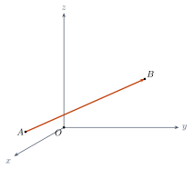
Với hai điểm \(A(5;\,0;\,1)\) và \(B(1;\,5;\,3)\) (hình vẽ), \(\overrightarrow{AB}=\)…
Answer: b. \(\overrightarrow{AB}=(x_B-x_A;\,y_B-y_A;\,z_B-z_A)=(-4;\,5;\,2)\).
Đáp án b. \(\overrightarrow{AB}=(x_B-x_A;\,y_B-y_A;\,z_B-z_A)=(-4;\,5;\,2)\).
A drone \(M\) flies inside a gym whose floor corner is \(O\) (floor \((Oxy)\), walls \((Oxz)\), \((Oyz)\)). It is \(6\) m from \((Oyz)\), \(5\) m from \((Oxz)\) and at height \(3\) m (figure). Then \(M\) has coordinates…
Một drone \(M\) bay trong nhà thi đấu có góc sàn \(O\) (sàn \((Oxy)\), tường \((Oxz)\), \((Oyz)\)). Drone cách \((Oyz)\) \(6\) m, cách \((Oxz)\) \(5\) m và ở độ cao \(3\) m (hình vẽ). Khi đó \(M\) có tọa độ…
Answer: d. The distance to \((Oyz)\) is \(|x|\), to \((Oxz)\) is \(|y|\), to \((Oxy)\) is \(|z|\); \(M\) is inside the room, so all coordinates are positive: \(M(6;\,5;\,3)\).
Đáp án d. Khoảng cách tới \((Oyz)\) là \(|x|\), tới \((Oxz)\) là \(|y|\), tới \((Oxy)\) là \(|z|\); \(M\) ở trong phòng nên các tọa độ đều dương: \(M(6;\,5;\,3)\).
A cube \(ABCD.A'B'C'D'\) of edge \(4\) sits in the corner of \(Oxyz\): \(A=O\), \(B\), \(D\), \(A'\) on the positive axes \(Ox\), \(Oy\), \(Oz\) (figure). What are the coordinates of the center \(I\) of the face \(BCC'B'\)?
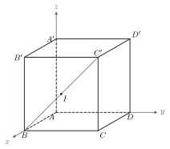
Một hình lập phương \(ABCD.A'B'C'D'\) cạnh \(4\) đặt ở góc hệ \(Oxyz\): \(A\) trùng \(O\); \(B\), \(D\), \(A'\) nằm trên các tia \(Ox\), \(Oy\), \(Oz\) (hình vẽ). Tọa độ của tâm \(I\) của mặt \(BCC'B'\) là…
Answer: b. \(B(4;0;0)\), \(D(0;4;0)\), \(A'(0;0;4)\); \(I\) is the midpoint of \(BC'\) with \(B(4;\,0;\,0)\), \(C'(4;\,4;\,4)\), so \(I(4;\,2;\,2)\).
Đáp án b. \(B(4;0;0)\), \(D(0;4;0)\), \(A'(0;0;4)\); \(I\) là trung điểm của \(BC'\) với \(B(4;\,0;\,0)\), \(C'(4;\,4;\,4)\), nên \(I(4;\,2;\,2)\).
B. True or FalseB. Đúng hoặc sai
The point symmetric to \(M(2;5;-3)\) about the axis \(Oz\) is \((-2;-5;-3)\).
Điểm đối xứng với \(M(2;5;-3)\) qua trục \(Oz\) là \((-2;-5;-3)\).
The correct point is \((-2;-5;-3)\).
Điểm đúng là \((-2;-5;-3)\).
The point \(N(3;1;-2)\) lies in the plane \((Oxz)\).
Điểm \(N(3;1;-2)\) thuộc mặt phẳng \((Oxz)\).
A point of \((Oxz)\) has the third coordinate 0.
Điểm thuộc \((Oxz)\) có tọa độ thứ ba bằng 0.
\(d\left(M,(Oyz)\right)=3\) for \(M(3;\,5;\,6)\) (see the figure).
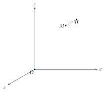
\(d\left(M,(Oyz)\right)=3\) với \(M(3;\,5;\,6)\) (xem hình).
The plane \((Oyz)\) is \(x=0\), so \(d=|x_M|=3\). The statement is true.
Mặt phẳng \((Oyz)\) có phương trình \(x=0\), nên \(d=|x_M|=3\). Mệnh đề đúng.
C. Short AnswerC. Trả lời ngắn
\(A(0;0;0)\), \(B(4;4;7)\). Find \(AB\).
Cho \(A(0;0;0)\), \(B(4;4;7)\). Tính \(AB\).
Enter a number.
Nhập một số.
\(AB=\sqrt{(x_B-x_A)^2+\dots}=9\).
\(AB=\sqrt{(x_B-x_A)^2+\dots}=9\).
\(ABCD\) is a parallelogram, \(A(2;1;1)\), \(B(1;3;0)\), \(C(6;3;3)\). Find the \(z\)-coordinate of \(D\).
Cho hình bình hành \(ABCD\) có \(A(2;1;1)\), \(B(1;3;0)\), \(C(6;3;3)\). Tìm cao độ của \(D\).
Enter a number.
Nhập một số.
\(z_D=z_A+z_C-z_B=4\).
\(z_D=z_A+z_C-z_B=4\).
Given \(A(4;\,6;\,1)\) and \(\overrightarrow{AB}=(-1;\,-4;\,2)\) (figure), find \(x_B+y_B+z_B\).
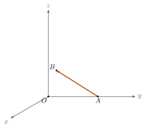
Cho \(A(4;\,6;\,1)\) và \(\overrightarrow{AB}=(-1;\,-4;\,2)\) (hình vẽ). Tính \(x_B+y_B+z_B\).
Enter a number.
Nhập một số.
\(\overrightarrow{AB}=(x_B-x_A;\,y_B-y_A;\,z_B-z_A)\Rightarrow B=A+\overrightarrow{AB}=(3;\,2;\,3)\), so \(x_B+y_B+z_B=8\).
\(\overrightarrow{AB}=(x_B-x_A;\,y_B-y_A;\,z_B-z_A)\Rightarrow B=A+\overrightarrow{AB}=(3;\,2;\,3)\), nên \(x_B+y_B+z_B=8\).
D. Self-practice: Multiple ChoiceD. Tự luyện: trắc nghiệm
The rectangular box \(OABC.O'A'B'C'\) has \(O\) at the origin, \(A\) on \(Ox\), \(C\) on \(Oy\), \(O'\) on \(Oz\), with \(OA=5\), \(OC=3\), \(OO'=4\) (see the figure). The coordinates of \(B'\) are…
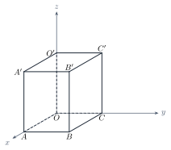
Hình hộp chữ nhật \(OABC.O'A'B'C'\) có \(O\) là gốc tọa độ, \(A\) thuộc \(Ox\), \(C\) thuộc \(Oy\), \(O'\) thuộc \(Oz\), với \(OA=5\), \(OC=3\), \(OO'=4\) (xem hình). Tọa độ của \(B'\) là…
Answer: c. \(B'\) is reached by going \(5\) along \(Ox\), \(3\) along \(Oy\), \(4\) along \(Oz\): \(B'(5;\,3;\,4)\).
Đáp án c. Từ \(O\) tới \(B'\): đi \(5\) theo \(Ox\), \(3\) theo \(Oy\), \(4\) theo \(Oz\): \(B'(5;\,3;\,4)\).
The point symmetric to \(M(-5;\,4;\,2)\) with respect to the plane \((Oyz)\) is…
Điểm đối xứng với \(M(-5;\,4;\,2)\) qua mặt phẳng \((Oyz)\) là…
Answer: c. Reflecting in \((Oyz)\) changes only the sign of the coordinate along the axis perpendicular to it.
Đáp án c. Đối xứng qua \((Oyz)\) chỉ đổi dấu tọa độ ứng với trục vuông góc với mặt phẳng đó.
The distance from \(M(-8;\,-6;\,-1)\) to the axis \(Oz\) is…
Khoảng cách từ \(M(-8;\,-6;\,-1)\) đến trục \(Oz\) bằng…
Answer: b. The foot of the perpendicular on \(Oz\) keeps only the \(z\)-coordinate, so the distance is \(\sqrt{8^2+6^2}=10\).
Đáp án b. Hình chiếu của \(M\) trên \(Oz\) chỉ giữ tọa độ \(z\), nên khoảng cách là \(\sqrt{8^2+6^2}=10\).
In \(Oxyz\), \(\overrightarrow{OM}=-2\vec i+5\vec j\). The coordinates of \(M\) are…
Trong không gian \(Oxyz\), \(\overrightarrow{OM}=-2\vec i+5\vec j\). Tọa độ điểm \(M\) là…
Answer: a. \(\overrightarrow{OM}=x\vec i+y\vec j+z\vec k\Leftrightarrow M(x;y;z)\); a missing vector means coordinate 0: \(M(-2;\,5;\,0)\).
Đáp án a. \(\overrightarrow{OM}=x\vec i+y\vec j+z\vec k\Leftrightarrow M(x;y;z)\); vectơ đơn vị không có mặt ứng với tọa độ 0: \(M(-2;\,5;\,0)\).
Find the point \(M\) on the axis \(Oz\) that is equidistant from \(A(-5;\,-1;\,-1)\) and \(B(-5;\,5;\,1)\).
Tìm điểm \(M\) thuộc trục \(Oz\) cách đều hai điểm \(A(-5;\,-1;\,-1)\) và \(B(-5;\,5;\,1)\).
Answer: b. \(M\) has only the \(z\)-coordinate \(t\). \(MA^2=MB^2\) gives a linear equation in \(t\): \(t=6\).
Đáp án b. \(M\) chỉ có tọa độ \(z=t\). Từ \(MA^2=MB^2\) được phương trình bậc nhất ẩn \(t\): \(t=6\).
A room is a rectangular box \(1\) m long (along \(Ox\)), \(8\) m wide (along \(Oy\)) and \(4\) m high (along \(Oz\)), with a floor corner at \(O\). A cable is stretched from \(O\) to the opposite corner of the ceiling. How long is the cable (m)?
Một căn phòng dạng hình hộp chữ nhật dài \(1\) m (theo \(Ox\)), rộng \(8\) m (theo \(Oy\)), cao \(4\) m (theo \(Oz\)), một góc sàn ở \(O\). Người ta căng một sợi dây từ \(O\) đến góc đối diện trên trần. Sợi dây dài bao nhiêu mét?
Answer: c. The opposite ceiling corner is \((1;\,8;\,4)\), so the length is \(\sqrt{1^2+8^2+4^2}=9\).
Đáp án c. Góc trần đối diện là \((1;\,8;\,4)\), nên độ dài là \(\sqrt{1^2+8^2+4^2}=9\).
\(A(-4;\,6;\,0)\), \(B(-1;\,4;\,2)\), \(C(-1;\,6;\,4)\). Triangle \(ABC\)…
Cho \(A(-4;\,6;\,0)\), \(B(-1;\,4;\,2)\), \(C(-1;\,6;\,4)\). Tam giác \(ABC\)…
Answer: a. \(\overrightarrow{BA}\cdot\overrightarrow{BC}=0\), so the right angle is at \(B\).
Đáp án a. \(\overrightarrow{BA}\cdot\overrightarrow{BC}=0\), nên tam giác vuông tại \(B\).
\(A(0;\,4;\,0)\), \(B(6;\,-5;\,6)\). \(M\) lies on segment \(AB\) with \(MA=2\,MB\). The coordinates of \(M\) are…
Cho \(A(0;\,4;\,0)\), \(B(6;\,-5;\,6)\). Điểm \(M\) thuộc đoạn \(AB\) sao cho \(MA=2\,MB\). Tọa độ của \(M\) là…
Answer: c. \(\overrightarrow{AM}=2\overrightarrow{MB}\Rightarrow M=\dfrac{A+2 B}{1+2}=(4;\,-2;\,4)\).
Đáp án c. \(\overrightarrow{AM}=2\overrightarrow{MB}\Rightarrow M=\dfrac{A+2 B}{1+2}=(4;\,-2;\,4)\).
8Common MistakesLỗi thường gặp
Swapping start and end. \(\overrightarrow{AB}=B-A\), not \(A-B\).
Nhầm điểm đầu và điểm cuối. \(\overrightarrow{AB}=B-A\), không phải \(A-B\).
Wrong sign for symmetric points. About a plane only one sign changes; about an axis two signs change.
Sai dấu khi tìm điểm đối xứng. Qua mặt phẳng chỉ đổi dấu một tọa độ; qua trục đổi dấu hai tọa độ.
Projection and symmetric point are different. A projection sets a coordinate to 0; a symmetric point changes its sign.
Nhầm hình chiếu với điểm đối xứng. Hình chiếu cho tọa độ bằng 0; điểm đối xứng đổi dấu tọa độ.
Forgetting the root. \(AB=\sqrt{\dots}\), not the sum of squares.
Quên căn bậc hai. \(AB=\sqrt{\dots}\), không phải tổng các bình phương.
9Lesson SummaryTổng kết
A point is \(M(x;y;z)\); \(\overrightarrow{AB}=B-A\).
Điểm \(M(x;y;z)\); \(\overrightarrow{AB}=B-A\).
Projection: set coordinates to 0. Symmetric point: change signs.
Hình chiếu: cho tọa độ bằng 0. Điểm đối xứng: đổi dấu tọa độ.
\(AB=\sqrt{(\Delta x)^2+(\Delta y)^2+(\Delta z)^2}\); midpoint and centroid are averages.
\(AB=\sqrt{(\Delta x)^2+(\Delta y)^2+(\Delta z)^2}\); trung điểm và trọng tâm là trung bình cộng.
Key English words: coordinates, projection, midpoint, centroid.
Từ cần nhớ (chạm vào để xem tiếng Anh): tọa độ; hình chiếu; trung điểm; trọng tâm.